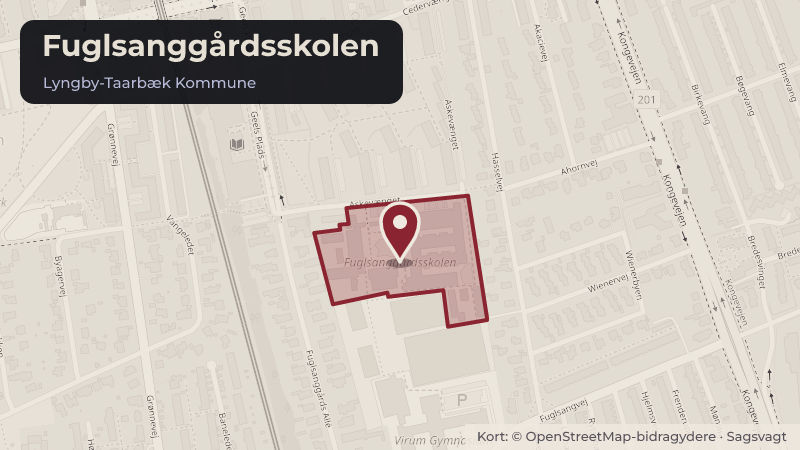

Besluttet 19. august, Børne- og Skoleudvalget, Lyngby-Taarbæk
Skoledistrikter 2027/2028
Kommunalbestyrelsen besluttede den 30. august 2023 at indføre et overordnet princip for det fremadrettede arbejde med skoledistrikter i forbindelse med klassedannelsen med henblik på at sikre en så optimal udnyttelse af skolekapaciteten som muligt.
Bydele i sagen: Virum
Steder i sagen: Fuglsanggårdsskolen · Virum Skole

Kort fortalt
- Hvem
- Børne- og Skoleudvalget, Lyngby-Taarbæk Kommune
- Hvornår
- Onsdag 19. august 2026
- Status
- Besluttet. Godkendt.
- Næste skridt
- Såfremt forslaget godkendes, vil det blive sendt i høring hos skolebestyrelserne samt i offentlig høring i perioden 19. august 2026 til 9. september 2026. Desuden sendes forslaget til kommentering i MED-systemet.
Læs hele sagen Kommunens egen tekst
Indstilling
Forvaltningen foreslår, at sende forslag om ændring af skoledistrikterne for Virum Skole og
Fuglsanggårdsskolen i høring hos skolebestyrelserne samt i offentlig høring i perioden 19.
august 2026 til 9. september 2026.
Problemstilling
Kommunalbestyrelsen besluttede den 30. august 2023 at indføre et overordnet princip for det
fremadrettede arbejde med skoledistrikter i forbindelse med klassedannelsen om en så optimal
udnyttelse af skolekapaciteten som muligt.
Der er per 9. juni 2026 660 børn (eksklusive børn med søskedende på privat- eller udenbys
skole) bosiddende i Lyngby-Taarbæk Kommune med ret til en plads på en af kommunens
folkeskoler. Kort over antal mulige skolestartere i 2027/2028 fordelt på skoledistrikter er
bilagt. Det bemærkes, at det er antal bosiddende børn med ret til en plads på distriktsskolen,
der fremgår - ikke det forventede antal skolestartere.
Når der tages højde for på de seneste års indskrivningsfrekvens, forventes alle skolestartere i
skoleåret 2027/2028 at kunne rummes indenfor den nuværende kapacitet på kommunens
folkeskoler med undtagelse af på Fuglsanggårdsskolen.
Tabel 1 viser antallet af skolestartere til skoleåret 2027/2028, som pr. 9. juni 2026 er
bosiddende i kommunen (eksklusive børn med søskende på privat- eller udenbys skoler).
Tabellen viser desuden den enkelte skoles nuværende maksimale kapacitet på
børnehaveklassetrinnet samt det forventede antal børnehaveklassespor i henhold til
elevtalsprognosen fra april 2026.
Det bemærkes, at prognosen er baseret på de seneste tre års indskrivningsfrekvenser. Der
forekommer imidlertid årlige udsving i indskrivningsfrekvensen, særligt i de år, hvor der
oprettes ekstra spor på skolerne. Dette kan medføre, at indskrivningsfrekvensen på enkelte
skoler overstiger 100 pct., mens andre skoler oplever en lavere indskrivningsfrekvens, idet en
del af børnene optages på den skole, hvor der er etableret et ekstra spor. Dette vil påvirke
fremskrivningen.
Tabel 1. skolestartere 2027/2028
Antal bosiddende
skolestartere (ekskl. børn
Antal maksimale spor
med søskende på privat-
v. nuværende
Forventet antal spor jf.
eller udenbys skole)
kapacitet
elevtalsprognose 2026
Virum Skole
Fuglsanggårdsskolen
Hummeltofteskolen
Kongevejens Skole
Engelsborgskolen
Lindegårdsskolen
Lundtofte Skole
Trongårdsskolen
Taarbæk Skole
I alt
Det fremgår af tabel 1, at der pr. 9. juni 2026 er 92 skolestartere bosiddende i
Fuglsanggårdsskolens skoledistrikt med ret til en plads på skolen. Skolen har i skoleåret
2027/2028 kapacitet til 72 børnehaveklasseelever fordelt på tre børnehaveklassespor. Der
forventes således en kapacitetsudfordring i forhold til at kunne optage alle distriktets
skolestartere.
Forventede justeringer frem mod skoleåret 2026/2027
Det endelige antal skolestartere i skoleåret 2026/27 vil frem mod skolestart ændre sig i henhold
til:
Nettotilflytning
Antal skoleudsættelser
Antal omgængere
Antal børn henvist til specialtilbud
Antal elever på basishold
Antal børn, der vælger privatskole eller skole i anden kommune.
Løsninger
Forslag til skoledistriktsændringer fra skoleåret 2027/2028
Det fremgår af ovenstående, at der forventes kapacitetsmæssige udfordringer i forhold til at
kunne rumme alle skolestartere på Fuglsanggårdsskolen i skoleåret 2027/2028. Omvendt
forventes der ledig kapacitet på Virum Skole. Forvaltningen foreslår derfor, at et område med
19 skolestartere overføres fra Fuglsanggårdsskolens skoledistrikt til Virum Skoles skoledistrikt.
Herefter vil der pr. 9. juni 2026 være 102 skolestartere i Virum Skoles skoledistrikt, som har en
kapacitet på 120 pladser, mens der vil være 73 skolestartere i Fuglsanggårdsskolens
skoledistrikt, der har en kapacitet på 72 pladser. Idet det forventes, at et antal af børnene i
Fuglsanggårdsskolens skoledistrikt visiteres til specialtilbud eller tilvælger privat- eller andre
kommunale skoler, vurderes det, at de bosiddende børn i skoledistriktet kan rummes inden for
skolens kapacitet på 72 pladser.
En oversigt over de foreslåede ændringer af skoledistrikterne er bilagt. Center for By og Natur
vurderer, at forslaget til ændring i skoledistrikterne lever op til, at der er en sikker skolevej til
distriktskolen jf. Folkeskoleloven.
Antal bosiddende
skolestartere (ekskl. børn
Antal maksimale spor
med søskende på privat-
v. nuværende
Forventede
eller udenbys skole)
kapacitet
antal spor
Virum Skole
Fuglsanggårdsskolen
Hummeltofteskolen
Kongevejens Skole
Engelsborgskolen
Lindegårdsskolen
Lundtofte Skole
Trongårdsskolen
Taarbæk Skole
I alt
Det forventes, at forslaget ikke vil medføre behov for bygningsmæssige tilpasninger.
Høring
Forvaltningen foreslår at sende forslag om ændring af skoledistrikterne for Virum Skole og
Fuglsanggårdsskolen i høring hos skolebestyrelserne samt i offentlig høring i perioden 19.
august 2026 til 9. september 2026.
Strategisk ramme
Jf. Folkeskoleloven §40 træffer Kommunalbestyrelsen beslutning om kommunens inddeling i
skoledistrikter.
Videre proces
Såfremt forslaget godkendes, vil det blive sendt i høring hos skolebestyrelserne samt i offentlig
høring i perioden 19. august 2026 til 9. september 2026. Desuden sendes forslaget til
kommentering i MED-systemet. Herefter forelægges ny sag til endelig politisk stillingtagen i
Kommunalbestyrelsen i oktober 2026.
Økonomi
Sagen har ingen bevillingsmæssige konsekvenser. Skoleområdets budget demografireguleres
årligt, hvor der foretages en efterregulering på baggrund af nuværende skoleårs indskrivning
og den forventede indskrivning til kommende skoleårs start for resten af året. I overslagsårene
reguleres med udgangspunkt i befolkningsprognosen, med afsæt i seneste elevprognose og
beregnet forventet klassedannelse for børnehaveklasserne.
Beslutningskompetence
Børne- og Skoleudvalget beslutter.
Beslutning
Godkendt.
Kilde: Lyngby-Taarbæk Kommune, Børne- og Skoleudvalget, referat fra mødet onsdag 19. august 2026, punkt 5. Læs den originale sag hos kommunen.